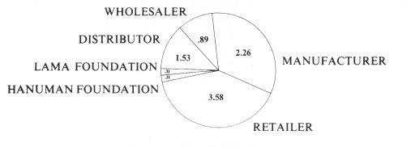
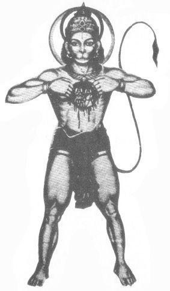

COST DISTRIBUTION

HANUMAN FOUNDATION
A CURRENT NOTE
BE HERE NOW was originally distributed in pamphlet form by Lama Foundation and was subsequently published by Lama Foundation as this book, more than 928,300 copies of which have been distributed by Crown Publishers to date. In the summer of 1977 Lama Foundation decided to give the copyright and half the proceeds from BE HERE NOW to Hanuman Foundation to further distribute the energy generated by this book through the projects of Hanuman Foundation. For this generous sacrifice and gesture of faith, Hanuman Foundation would like to thank Lama Foundation.
Hanuman Foundation, instigated by Ram Dass, was incorporated in California in 1974 as a tax-exempt non-profit corporation to “promulgate spiritual well-being among members of the society as a whole through education and service, by spiritual training and by publications and recordings, and to promote the study, practice, and teaching of spiritual knowledge.” A newsletter and catalog are sent semi-annually describing the activities of Hanuman Foundation, which include the Prison-Ashram Project, Dying Project, Hanuman Tape Library, Ram Dass’ lecture tours and retreats, and other tentative projects. If you would like to receive this newsletter please include a first-class stamp with your name and address to Hanuman Foundation, Box 203, 524 San Anselmo Avenue, San Anselmo, CA 94960.
JAI HANUMAN!
